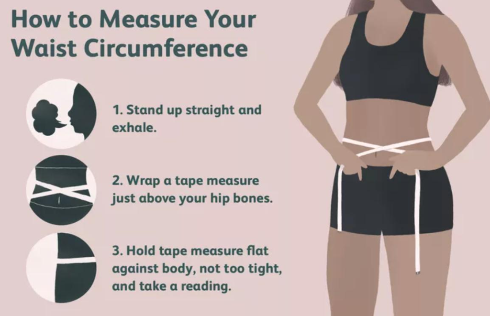
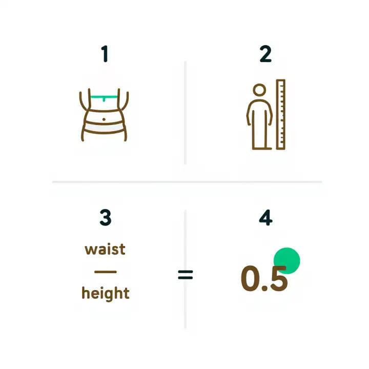

How to Calculate WHtR for Army: Formula, Examples, and Standards (2026)

The Waist-to-Height Ratio (WHtR) is an important measurement used in the U.S. Army's updated body composition screening program. Understanding how to calculate WHtR for Army screening can help Soldiers understand their measurements and learn how the current screening threshold works.
Under Army Directive 2026-13, published on July 7, 2026, the Army introduced waist-to-height ratio screening to replace the previous height-and-weight tables and circumference-based assessment methods covered by the directive. The published Army WHtR threshold is strictly below 0.55.
In this guide, you will learn the Army WHtR formula, how to measure waist circumference correctly, how to calculate your ratio step by step, and how to interpret the result for military readiness.
What Is WHtR in the U.S. Army?
WHtR stands for Waist-to-Height Ratio. It compares waist circumference with height to produce a numerical ratio.
Unlike traditional height and weight screening, WHtR focuses on the relationship between waist size and height. It provides a standardized measurement that can be used during body composition screening.
For example, two Soldiers may have the same height but different waist measurements. Their WHtR results will therefore be different.
The main terms associated with this calculation include waist circumference, height measurement, body composition screening, Army body composition standards, and the Army Body Composition Program (ABCP).
What Is the Army WHtR Formula?
The formula for calculating waist-to-height ratio is simple:
For an accurate calculation, waist circumference and height must use the same unit of measurement.
You can calculate WHtR using inches for both measurements or centimeters for both measurements. The resulting ratio will be the same.
Formula Calculation Example:
Height: 70 inches (5'10")
Waist Circumference: 38 inches
Calculation: 38 ÷ 70
WHtR Result: 0.543
Assessment: This result is below 0.55, meaning it meets the numerical threshold described in the current Army policy.
How to Calculate WHtR for Army Screening Step by Step
Follow these four steps to understand your waist-to-height ratio and verify your readiness status:
Step 1: Measure Your Height
Measure your height accurately, using a reliable measuring device. Record the measurement in inches or centimeters.
For example, a height of 5 feet 10 inches equals 70 inches (5 × 12 + 10 = 70).
For an official Army assessment, follow the applicable measurement procedures and use the recorded height required by your unit.
Step 2: Measure Your Waist Circumference
Use a flexible measuring tape to measure your waist circumference at the navel, following the applicable Army instructions.
Keep the tape horizontal around your waist. It should be snug without compressing the skin. Stand naturally and avoid deliberately pulling your stomach inward.
For an official assessment, the measurement must be taken according to the Army's prescribed procedures on DA Form 5500.

Step 3: Divide Waist Circumference by Height
Once you have both measurements, divide your waist circumference by your height.
For example:
Height = 70 inches
Waist circumference = 38 inches
WHtR = 38 ÷ 70 = 0.543
The result is your waist-to-height ratio.
Step 4: Compare the Result With the Army Threshold
Under the published WHtR standard, a result below 0.55 meets the numerical screening threshold.
A result of 0.55 or higher does not meet that threshold and may require the confirmation procedures specified by Army policy under Army Directive 2026-13.
Remember that a personal calculation is not an official Army assessment. Official measurements, confirmation procedures, exemptions, and other applicable policy requirements still matter.
Army WHtR Calculation Examples
The following examples demonstrate how different waist measurements affect the ratio for a person who is 70 inches tall:
| Height | Waist Circumference | WHtR Ratio | Numerical Screening Status |
|---|---|---|---|
| 70 inches (5'10") | 36 inches | 0.514 | Below 0.55 (Pass) |
| 70 inches (5'10") | 38 inches | 0.543 | Below 0.55 (Pass) |
| 70 inches (5'10") | 39 inches | 0.557 | 0.55 or higher (Exceeds) |
| 70 inches (5'10") | 40 inches | 0.571 | 0.55 or higher (Exceeds) |
These examples illustrate the formula only. They are not substitutes for an official Army screening or confirmation measurement.

What Is the Passing WHtR for the Army in 2026?
The published Army WHtR screening threshold is below 0.55.
A result of 0.549 is below the threshold, while 0.550 is equal to the threshold and does not meet the numerical requirement.
Do not rely on rounding alone to decide whether you meet the standard. Calculate the ratio using the required measurement precision and follow official instructions for recording and interpreting results.
The new screening method also means that older Army height-and-weight charts and tape-test calculators may no longer reflect the current policy. If you want to review the previous weight tables, see our Old Screening Table Archive, or examine historical circumference calculations on our Army Body Fat Calculator.
Common Mistakes When Calculating WHtR
Avoid these common mistakes when calculating your waist-to-height ratio:
- Mixing measurement units: Do not divide centimeters by inches. Convert both measurements to the same unit first.
- Measuring at the wrong location: Follow the applicable instructions for measuring waist circumference horizontally at the navel (belly button).
- Pulling the tape too tightly: Compressing the skin or indenting abdominal tissue can distort the reading.
- Using an estimated height: Use an accurate measurement taken barefoot against a stadiometer rather than a guess.
- Rounding too early: Keep sufficient decimal precision (at least 3 decimal places) during the calculation.
- Treating a personal calculation as official clearance: Your result does not replace an authorized Army assessment conducted by certified unit leadership.
Accurate measurements help produce a more reliable calculation and make it easier to understand the screening threshold.
Use an Army Height and Weight Calculator
Check Your WHtR Instantly:
If you prefer an automated and instant calculation, use our Army Height and Weight Calculator to explore Army-related measurements and screening information.
For a WHtR calculation, enter your waist circumference and height in the same unit, then divide the waist measurement by the height. Our dedicated Army WHtR calculator computes your exact ratio and highlights whether you pass or exceed the 0.550 threshold.
Always verify that any tool you use reflects current Army policy under Directive 2026-13 and does not simply reproduce outdated height-and-weight tables.
Frequently Asked Questions
How do you calculate WHtR for the Army?
Divide your waist circumference by your height, using the same measurement unit for both. For example, 38 inches divided by 70 inches equals approximately 0.543.
What is the Army's WHtR threshold?
The published threshold is below 0.55. A ratio of 0.55 or higher does not meet the numerical screening threshold.
Can I calculate WHtR using centimeters?
Yes. Divide waist circumference in centimeters by height in centimeters. The ratio is equivalent to a calculation using inches.
Does a passing WHtR calculation guarantee that I pass Army screening?
No. A personal calculation is informational. Official screening measurements, confirmation procedures, and applicable Army policy determine the official outcome.
Is WHtR the same as BMI?
No. WHtR compares waist circumference with height, while body mass index (BMI) compares weight with height squared. They are different measurements and should not be treated as interchangeable.
Final Thoughts
Learning how to calculate WHtR for Army screening is straightforward once you understand the formula: waist circumference divided by height.
Use accurate measurements, keep your units consistent, and understand the published threshold of below 0.55. For official decisions, always follow the latest Army instructions and consult authorized personnel when necessary.
Official Resources
- U.S. Army Body Composition Program (ABCP) →
- U.S. Army Article on Updated Body Composition Policy →
- Use our Army Height and Weight Calculator to explore related measurements and learn more about Army body composition screening.